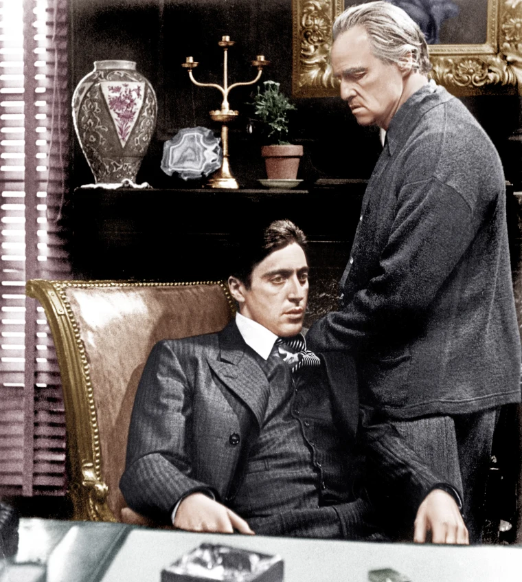

The Godfather is a 1972 American epic gangster film directed by Francis Ford Coppola, who co-wrote the screenplay with Mario Puzo, based on Puzo's best-selling 1969 novel. The film stars an ensemble cast including Marlon Brando, Al Pacino, James Caan, Richard Castellano, Robert Duvall, Sterling Hayden, John Marley, Richard Conte and Diane Keaton. It is the first installment in The Godfather trilogy, chronicling the Corleone family under patriarch Vito Corleone (Brando) from 1945 to 1955. It focuses on the transformation of his youngest son, Michael Corleone (Pacino), from reluctant family outsider to ruthless mafia boss. Paramount Pictures obtained the rights to the novel for $80,000, before it gained popularity. Studio executives had trouble finding a director; the first few candidates turned down the position before Coppola signed on to direct the film but disagreement followed over casting several characters, in particular, Vito (Brando) and Michael (Pacino). Filming took place primarily in locations around New York City and Sicily, and it was completed ahead of schedule. The score was composed principally by Nino Rota, with additional pieces by Carmine Coppola. The Godfather premiered at the Loew's State Theatre on March 14, 1972, and was widely released in the United States on March 24, 1972. It was the highest-grossing film of 1972, and was for a time the highest-grossing film ever made, earning between $250 and $291 million at the box office. The film was acclaimed by critics and audiences, who praised its performances—particularly those of Brando and Pacino—direction, screenplay, story, cinematography, editing, score and portrayal of the mafia. The Godfather launched the successful careers of Coppola, Pacino and other relative newcomers in the cast and crew. At the 45th Academy Awards, the film won Best Picture, Best Actor (Brando) and Best Adapted Screenplay (for Puzo and Coppola). In addition, the seven other Oscar nominations included Pacino, Caan and Duvall, all for Best Supporting Actor, and Coppola for Best Director. The Godfather is regarded as one of the greatest and most influential films ever made, as well as a landmark of the gangster genre. It was selected for preservation in the U.S. National Film Registry of the Library of Congress in 1990, being deemed "culturally, historically, or aesthetically significant" and is ranked the second-greatest film in American cinema (behind Citizen Kane) by the American Film Institute. It was followed by sequels The Godfather Part II (1974) and The Godfather Part III (1990). Pauline Kael wrote that "If ever there was a great example of how the best popular movies come out of a merger of commerce and art, The Godfather is it."
In 1945, the New York City Corleone family don, Vito Corleone, listens to requests during his daughter Connie's wedding to Carlo Rizzi. Vito's youngest son Michael, a Marine who has thus far stayed out of the family business, introduces his girlfriend, Kay Adams, to his family at the reception. Johnny Fontane, a popular singer and Vito's godson, seeks Vito's help in securing a movie role. Vito sends his consigliere, Tom Hagen, to persuade studio president Jack Woltz to offer Johnny the part. Woltz refuses Hagen's request at first, but soon complies after finding the severed head of his prized stud horse in his bed. As Christmas approaches, drug baron Virgil "The Turk" Sollozzo asks Vito to invest in his narcotics business and for police protection. Vito declines, citing that involvement in narcotics would alienate his political connections. Suspicious of Sollozzo's partnership with the Tattaglia crime family, Vito sends his enforcer Luca Brasi to the Tattaglias on an espionage mission. Brasi is garroted to death during the initial meeting. Later, enforcers gun down Vito and coerce Hagen into a meeting. With Vito's first-born Sonny now in command, Sollozzo pressures Hagen to persuade Sonny to accept the narcotics deal. Vito survives the shooting and is visited in the hospital by Michael, who finds him unprotected after NYPD officers on Sollozzo's payroll clear out Vito's guards. Michael thwarts the attempt on his father's life but is beaten by corrupt police captain Mark McCluskey. After the attempted hit at the hospital, Sonny retaliates with a hit on Bruno Tattaglia. Sollozzo and McCluskey request to meet with Michael and settle the dispute. Michael feigns interest and agrees to meet, but hatches a plan with Sonny and Corleone capo Clemenza to kill them and go into hiding. Michael meets Sollozzo and McCluskey at a Bronx restaurant; after retrieving a handgun planted in the bathroom by Clemenza, he shoots both men dead. Despite a clampdown by the authorities for the killing of a police captain, the Five Families erupt in open warfare. Michael takes refuge in Sicily and Fredo, Vito's second son, is sheltered by Moe Greene in Las Vegas. In Sicily, Michael meets and marries a local woman, Apollonia. Sonny publicly attacks and threatens Carlo for physically abusing Connie. When he abuses her again, Sonny speeds to their home but is ambushed and murdered by gangsters at a highway toll booth. Apollonia is killed shortly thereafter by a car bomb intended for Michael. Devastated by Sonny's death and tired of war, Vito sets a meeting with the Five Families. He assures them that he will withdraw his opposition to their narcotics business and forgo avenging Sonny's murder. His safety guaranteed, Michael returns home to enter the family business and marry Kay. Kay gives birth to two children in the early 1950s. With his father nearing the end of his life and Fredo not suited to lead, Michael assumes the position of head of the Corleone family. Vito reveals to Michael that it was Don Barzini who ordered the hit on Sonny and warns him that Barzini would try to kill him at a meeting organized by a traitorous Corleone capo. With Vito's support, Michael relegates Hagen to managing operations in Las Vegas as he is not a "wartime consigliere". Michael travels to Las Vegas to buy out Greene's stake in the family's casinos and is dismayed to see that Fredo is more loyal to Greene than to his own family. In 1955, Vito dies of a heart attack while playing with Michael's son Anthony. At Vito's funeral, Tessio asks Michael to meet with Barzini, signaling his betrayal. The meeting is set for the same day as the baptism of Connie's baby. While Michael stands at the altar as the child's godfather, Corleone hitmen murder the dons of the Five Families, in addition to Greene for not selling his hotel and Tessio for betraying Michael. Michael extracts Carlo's confession for his involvement in Sonny's murder. He assures Carlo that he is being exiled, not murdered. However, Clemenza strangles Carlo in a car moments after his confession. Connie confronts Michael about his involvement in Carlo's death while Kay is in the room. Kay asks Michael if he ordered Carlo's death and is relieved when he denies responsibility. As she leaves, capos enter the office and pay reverence to Michael as "Don Corleone".